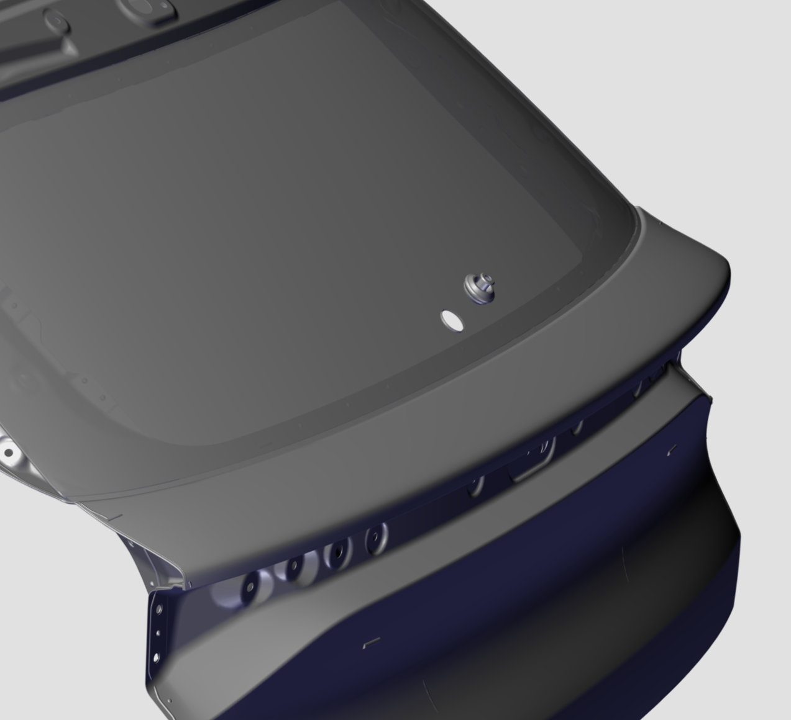
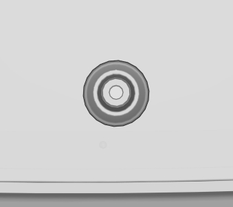
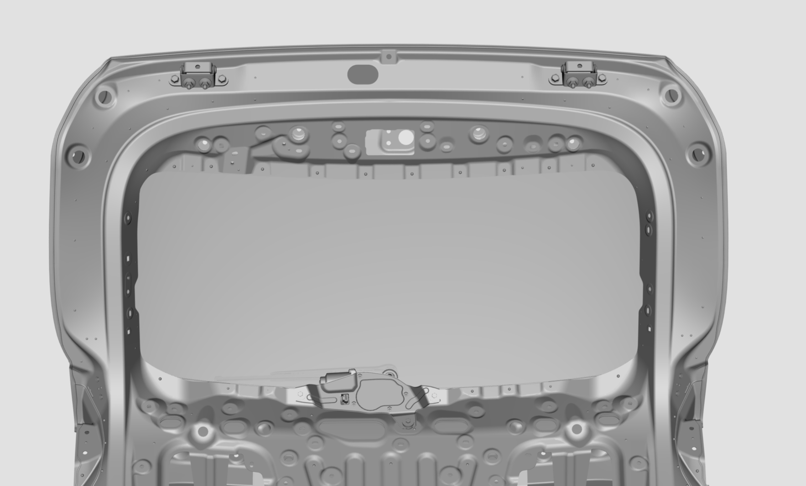
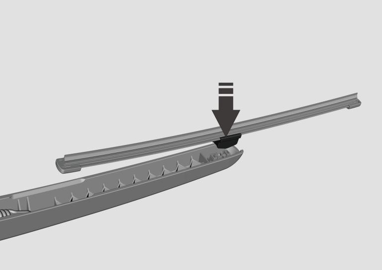
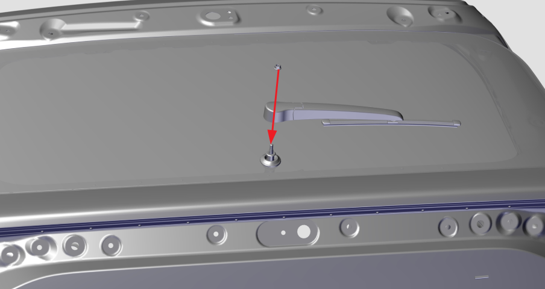
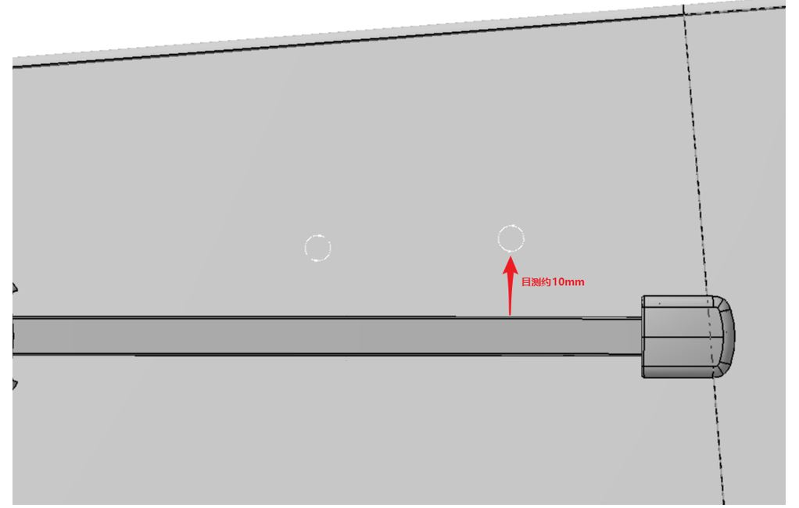
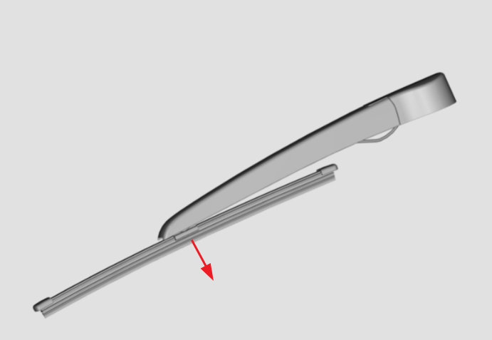

安装
1.将后雨刮防水胶套安装至背门玻璃开孔处（正对后档玻璃面，从车外按图示的方向将后雨刮防水套安装至背门玻璃开孔处）。注意：后雨刮防水套自带的箭头应朝上。


2. 首先将后雨刮电机输出轴从防水胶套上穿过，再用3颗六角头螺栓和平垫圈组合件依次将后窗刮水电机总成固定在背门内板上，最后将线束端接插件与雨刮电机接插件进行对插。
安装工具：10mm的套筒
扭力要求：11±2Nm

3. 安装背门内饰板。
4. 将后雨刮刷总成按图示方向与后雨刮臂总成进行卡接分装。

5. 安装后雨刮臂及刮刷总成：首先将后刮臂及刮刷总成安装在后窗刮水电机总成的刮臂输出轴上，然后将后雨刮刷的胶条刃口对齐或略低于后档玻璃的标记点。最后用1颗六角法兰面螺母紧固后刮臂及刮刷总成。（注意：后刮臂及刮刷总成安装后，应打开后雨刮工作3至5秒后关闭，目测后雨刮刷的停止位置应在后档玻璃面标记点10mm以内。）
安装工具：10mm的套筒
扭力要求：10±1Nm


拆卸
拆卸后雨刮方法与安装顺序相反。
1.拆卸后雨刮臂及雨刮刷总成：取下固定后雨刮臂及雨刮刷总成的六角法兰面螺母并取下雨刮臂及雨刮刷总成。
拆卸工具：10mm的套筒；
2.拆卸背门内饰板
3. 拆卸后雨刮电机；首先取下与雨刮电机接插件连接的线束，再取下固定后窗刮水电机总成的3颗六角头螺栓和平垫圈组合件并取下后雨刮电机。
拆卸工具：10mm的套筒
后雨刮刷拆卸方法
1.拆卸后雨刮刷：适当向上抬起后刮臂，按图示方向掰下后雨刮片并更换。
